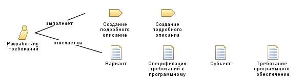

| Роль: Разработчик требований |
|
 |
| Исполнитель этой роли формулирует и передает детальные требования к системе. |
| Наборы ролей: Аналитики |
|
Взаимосвязи
 |
| Дополнительно выполняет |
|
| Изменяет |
|
Основное описание
|
Различные аспекты требований обычно указываются в рабочих продуктах различных типов, поэтому требования к системе
обычно содержатся в нескольких рабочих продуктах. Обязанностью исполнителя этой роли может быть создание
нескольких из них.
|
Персонал
| Квалификация |
Исполнитель этой роли должен обладать хорошими коммуникативными способностями, как в письменной, так и в устной речи.
Не обязательными, но важными являются знания в областях бизнеса и технологии.
Для эффективного выполнения задач этой роли исполнитель должен быть знаком с инструментальными средствами,
используемыми для оценки соответствия продукта заявленным требованиям.
|
| Подходы к назначению |
Исполнитель роли может быть назначен одним из следующих способов:
-
Присвоить только эту роль одному или нескольким сотрудникам. Это хорошее решение для больших коллективов, особенно
в том случае, если есть возможность привлечь к формулированию требований специализированных экспертов.
-
Передать эту роль одному или нескольким сотрудникам, которые также будут исполнять роль Аналитик. Этот вариант подходит для небольших и средних по
размеру коллективов испытателей, и часто используется в том случае, когда обе роли способны исполнять эксперты.
Необходимо внимательно следить за тем, чтобы функциям обеих ролей уделялось достаточно внимания.
|
© Copyright IBM Corp. 1987, 2006. Все права защищены..
|
|